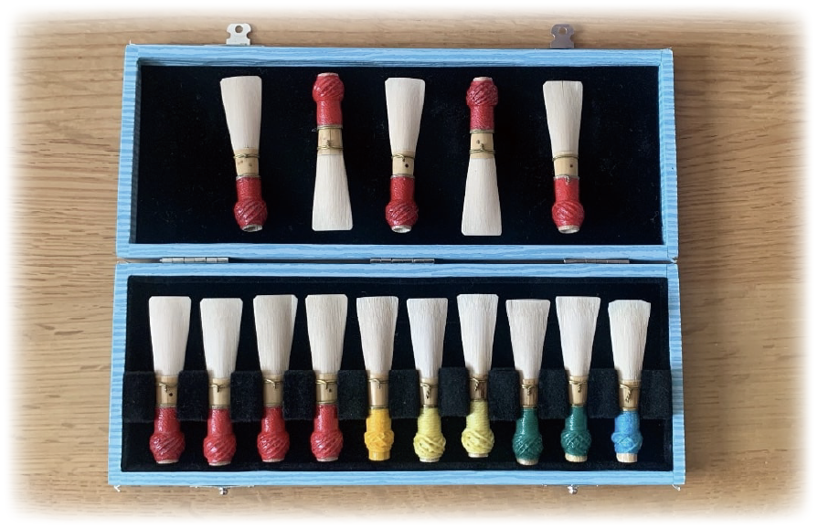
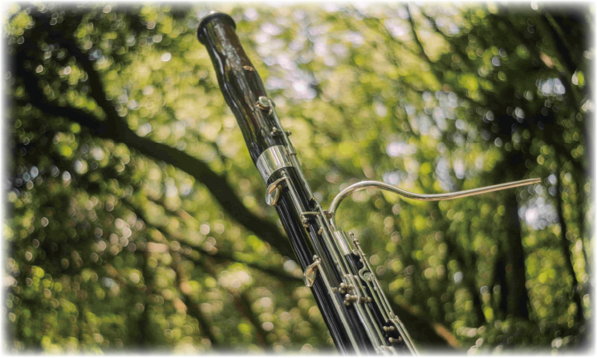

生活の中にファゴットの音を。
ファゴットという楽器を、そしてファゴットの“音”を知ってほしい。
そんな想いからこのサイトを制作しました。
マイナー楽器と言われていますが、
ファゴットの独特の美しい音色と温かい響きに
ベートーヴェンも「天性の声」だと称賛しています。
そんな魅力溢れるファゴットの音を是非、聴いてみてください。


History
ファゴットの先祖であるドゥルシアンは16世紀頃に誕生しました。
19世紀頃、ドイツの軍楽隊長がファゴットの改良に取り組んだことで、現在のファゴットの形になったと言われています。
Sound
クラシック、ポップス、ジャズ…
様々なジャンルでファゴットは活躍しています。
それぞれのジャンルでの音色の魅力に焦点を当てて、ご紹介していきます。

閲覧していただきありがとうございました。
ファゴットの音を聴いて、少しでも癒されたなぁと感じた方がいたら幸いです。